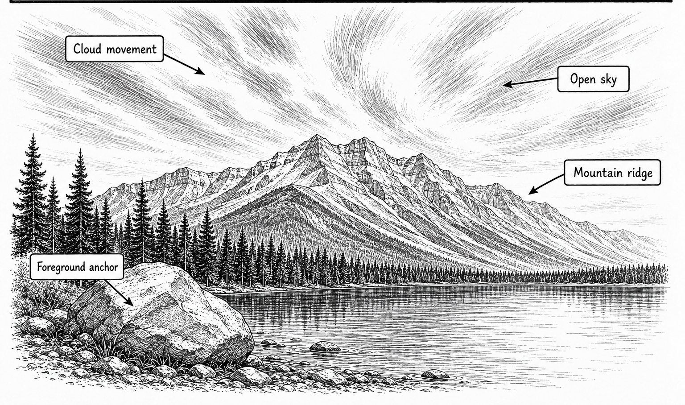

Primary real example
FUJIFILM Learning Centre
Ten-stop ND examples showing cloud motion and smoothed water.
Open the original exampleShot 44 | Any day | Trip-wide | Canada
Reference links for this shot.

These examples stay on their original sites. No photographer images are copied into this guide.
Primary real example
Ten-stop ND examples showing cloud motion and smoothed water.
Open the original exampleTechnical or safety reference
A second technique example for calculating a long exposure.
Open the original example